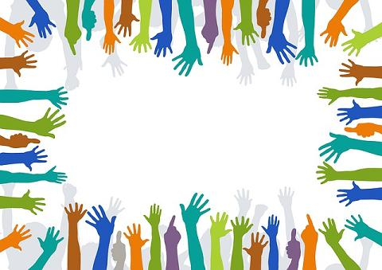

Quem somos?
Somos uma organização sem fins lucrativos comprometida com a transformação social. Atuamos em diversas frentes para promover dignidade, inclusão e oportunidades para comunidades em situação de vulnerabilidade. Acreditamos que, juntos, podemos construir um futuro mais justo e solidário.
Missão
Acreditamos que transformar realidades começa com propósito, compromisso e ação. Nossa missão é promover o desenvolvimento humano, social e sustentável por meio de iniciativas que valorizam a educação, a inclusão, a inovação e o respeito à diversidade. Trabalhamos para construir pontes entre comunidades, setores e ideias, atuando como catalisadores de mudanças positivas. Buscamos impactar vidas com projetos que gerem oportunidades, fortaleçam vínculos e ampliem o acesso a direitos fundamentais. Guiados por princípios éticos e pela transparência, nossa atuação é pautada na escuta ativa, na colaboração e na busca constante por soluções que atendam às necessidades reais da sociedade. Acreditamos que cada pessoa tem potencial para contribuir com um mundo mais justo, e nossa missão é criar os caminhos para que isso aconteça.
Visão
Nossa visão é ser referência em transformação social, promovendo soluções inovadoras, inclusivas e sustentáveis que inspirem outras instituições e comunidades a agir com propósito. Queremos construir uma sociedade mais justa, colaborativa e resiliente, onde cada indivíduo tenha acesso às oportunidades necessárias para desenvolver seu potencial. Visualizamos um mundo em que o conhecimento, a empatia e a responsabilidade coletiva sejam os pilares de uma convivência harmoniosa e próspera. Acreditamos que a mudança começa com uma ideia, mas se concretiza com ação. Por isso, nossa visão é ser agente dessa mudança — conectando pessoas, ideias e recursos para criar legados duradouros.
Valores
Transparência, empatia, compromisso, equidade e colaboração.
Nossa História
Desde 2015, temos impactado milhares de vidas com ações voltadas à educação, saúde, cultura e meio ambiente. Cada projeto é construído com base no diálogo com as comunidades e no respeito à diversidade.
Fale Conosco!
Endereço: Rua Presidente Ollivoti, 66- Bairro: Centro - Cidade: São Paulo/SP
Telefone: (11) 995647-6894
Email: Orgvolunt52@gmail.com